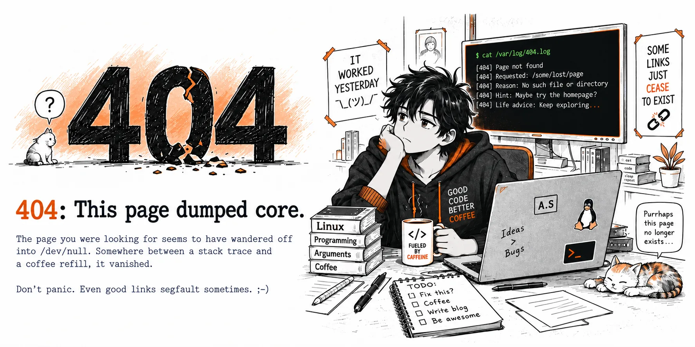

The requested page wandered off into /dev/null.
The page you were looking for seems to have wandered off into /dev/null. The stack trace says:
$ wget https://indrayam.com/this-page
Segmentation fault (core dumped)
#0 0x00000404 in missing_page ()
#1 0x00000000 in nowhere ()Don’t panic. Even good links segfault sometimes. ;-)